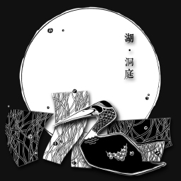
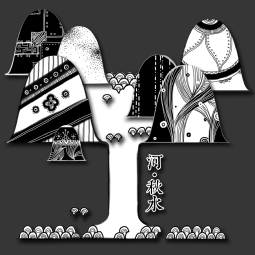
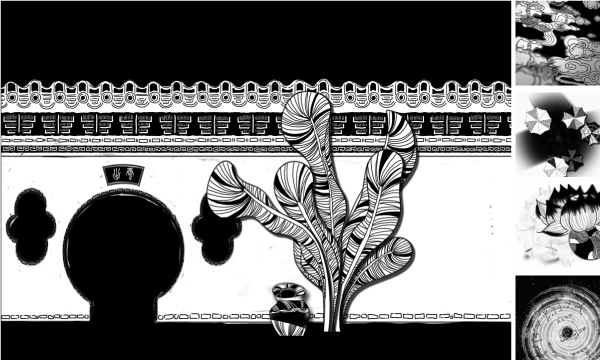
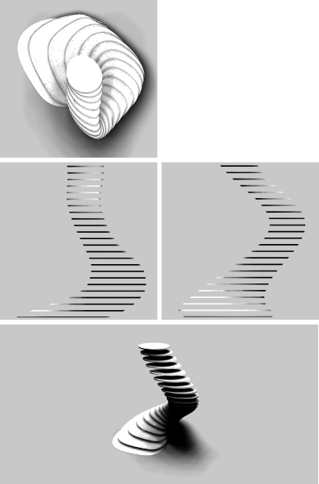
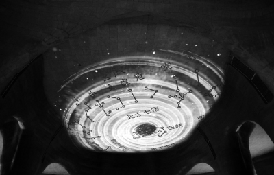
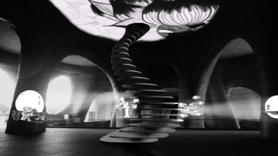
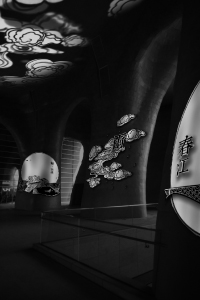

Goodness·Engergy·Water 上善若水
Basic Info
Type: Video / Interactive Installation
Tool: AI / PS / AE / AU / 3Ds Max
Team member: 1
Work in charge: Visual Style / Production / Audio / Modeling & Rending
Requirement & Purpose
This video installation was to be palced in the main hall of the XIMALAYA Centre, Shanghai, which was designed by Isozaki Arata. The vedio content themed in the six formats of the existance of water in order to match the style of the hall like a karst cave.
The installation was to monitor the crowd in the hall and decide which part of the video to play according to the crowd position.Projectors were placed in the instllation to project video onto the wall and the ceiling.
 
Illustration settings of the video

Screenshots of the Story of Rain

The installation of the Story of Rain
 

Rendering of the video projection